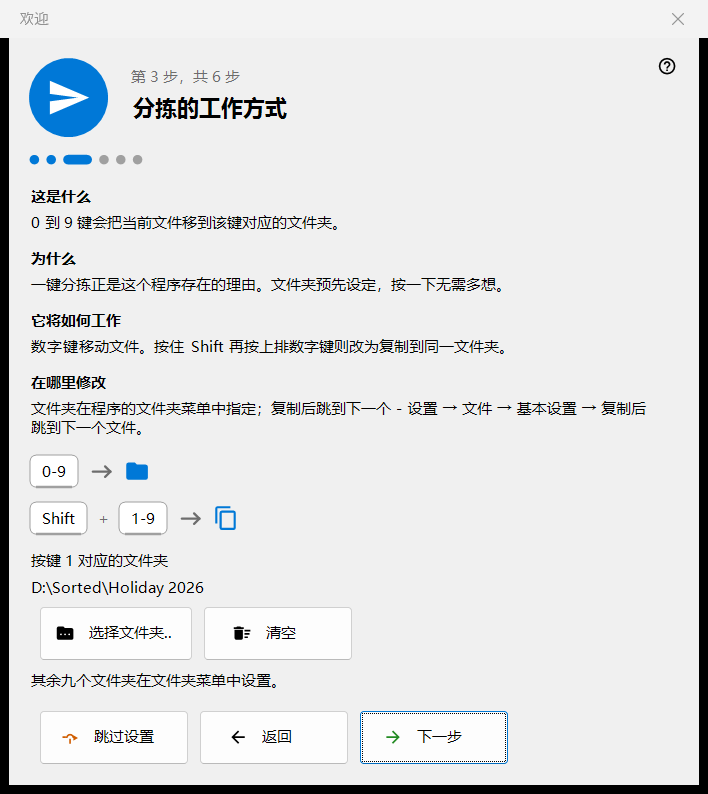
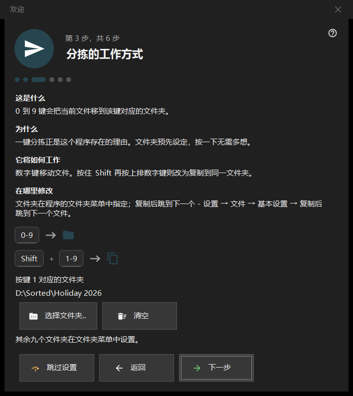

欢迎
欢迎
用途说明
欢迎步骤用几分钟设置基本项目：语言、外观、按键 1 对应的文件夹、删除方式和文件关联。它们会在首次启动时、通过空白查看器画面上的「初始设置」按钮，以及通过设置「常规」页中的「再次显示欢迎步骤」打开。欢迎步骤仅在 64 位版本中提供。


操作顺序
- 选择语言。
- 选择背景方案和滚轮的作用。
- 选择按键 1 对应的文件夹。
- 了解删除的工作方式。
- 设置文件关联。
- 查看总结并点击「完成」。「下一步」继续，「返回」后退，「跳过设置」直接跳到最后一步。
界面元素
界面语言
窗口语言会立即切换，作为预览；程序只有在点击「下一步」后才会采用它。若未点击「下一步」就关闭窗口，程序会恢复原来的语言。
外观
选择图片区域的背景方案（「按角落」、「黑色」、「白色」、「按边缘」、「按顶部」、「按底部」）和滚轮的作用：要么滚轮在光标处缩放、用方向键浏览文件，要么滚轮浏览文件、按住 Ctrl 滚动才缩放。两者之后都可以在设置的「图片」页中更改。
分拣的工作方式
数字键 0-9 把当前文件移到某个文件夹；Shift 加上排数字键则复制。用「选择文件夹..」按钮选择按键 1 对应的文件夹；其余九个稍后在设置的「目标」页中设置。若文件夹已不存在，会提示：「该文件夹已不可用，请选择其他文件夹。」
安全删除
说明 Del（送入回收站）和 Shift+Del（永久删除）的工作方式。删除选项在设置的「文件」页中。
在此打开图片
让本程序可以从文件资源管理器打开图片和视频。仅当程序不是以 Microsoft Store 软件包方式安装时才会出现此步骤；它只对当前用户账户生效，无需管理员权限。
一切就绪
总结列出每项设置、它的值以及在哪里修改。如果此电脑上安装了服务器组件，「此电脑上的服务器」区块会显示每个组件及其状态，并带有「打开管理器」按钮；未安装任何组件时，该区块隐藏。
步骤的组成
每个步骤有四个部分：「这是什么」、「为什么」、「它将如何工作」和「在哪里修改」。